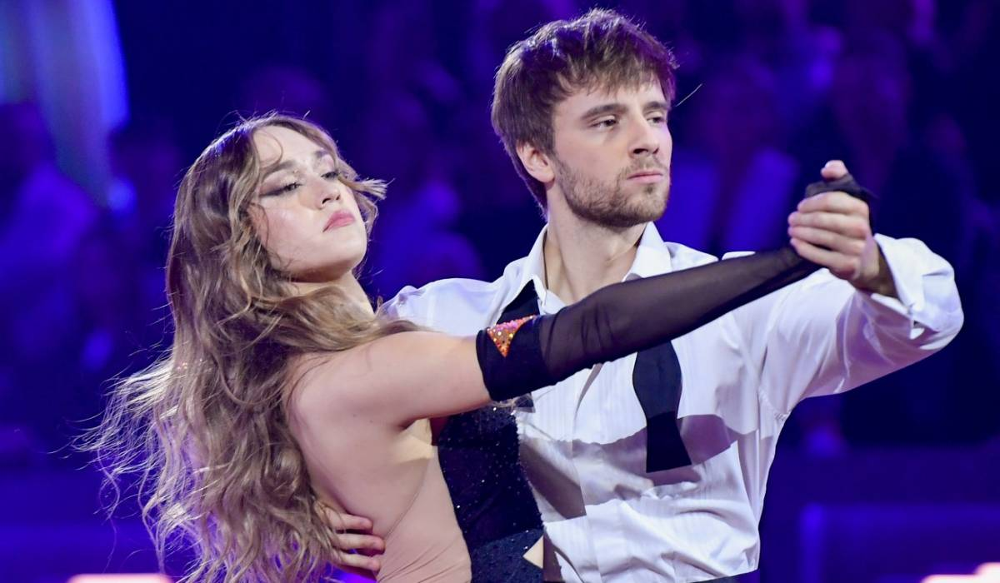

Taniec jako zainteresowanie to coś więcej niż zwykłe hobby. Taniec łączy aktywność fizyczną, kreatywność i emocjonalne zaangażowanie. Wybierając taniec jako zainteresowanie, rozwijamy nasze ciało i umysł, poprawiam koordynacje fizyczną.
Jest to również sposób wyrażania siebie i swoich uczuć. Tańcem można wyrażać najróżniejsze emocje. Ale żeby powstały takie emocje potrzebne są najróżniejsze choreografie. Piękne choreogrfie dopełniają rożnobarwne stroje, od ludowych aż po baletowe suknie.
